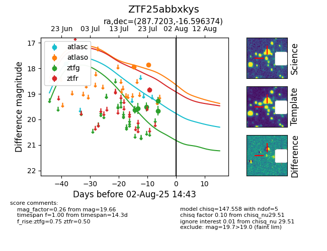

Target ZTF25abbxkys at 2025-08-02 14:43, see:
FINK: fink-portal.org/ZTF25abbxkys
Lasair: lasair-ztf.lsst.ac.uk/objects/ZTF25abbxkys
ALeRCE: alerce.online/object/ZTF25abbxkys
alt names
ZTF25abbxkys (ztf,fink)
coordinates:
equatorial (ra, dec) = (287.7203,-16.59637)
galactic (l, b) = (20.1188,-11.68401)
photometry
last atlasc=17.63, atlaso=17.86, ztfg=19.66, ztfr=18.84
2 atlasc, 2 atlaso, 5 ztfg, 1 ztfr detections
